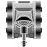

1. Introdução
 Robocode é um jogo de programação, onde os desenvolvedores podem programar tanques de guerra e testá-los contra os tanques programados por outros desenvolvedores. O código que define o comportamento dos tanques pode ser escritos tanto em Java quanto em .NET.
Robocode é um jogo de programação, onde os desenvolvedores podem programar tanques de guerra e testá-los contra os tanques programados por outros desenvolvedores. O código que define o comportamento dos tanques pode ser escritos tanto em Java quanto em .NET.
Uma vez programados, os tanques (também chamados de robôs) são colocados em uma arena de combate. A partir do momento em que a batalha é iniciada, o programador passa a não poder mais influenciar no jogo, exceto pelo código que escreveu anteriormente e que irá comandar seu robô na batalha. O objetivo do jogo é simples: ser o único robô na arena a não ser destruído. Como é de se esperar, para cumprir tal objetivo, o programador deve criar um robô que seja capaz de evitar ao máximo os tiros dos adversários e também atingi-los sempre que possível.
Veja abaixo a janela principal do Robocode, na qual é possível a criação e visualização de batalhas, além da criação de novos robôs. A figura abaixo apresenta uma batalha em execução.

2. Primeiros passos
Antes de sairmos escrevendo o nosso próprio robô, é bom que entendamos o funcionamento básico de um tanque e a quais condições o mesmo está sujeito em uma batalha. Para isso, vamos instalar a plataforma, e depois rodar alguns robôs-exemplo que acompanham o ambiente.
2.1. Instalação
Se você é usuário Ubuntu Linux, basta executar o seguinte comando:
sudo apt-get install robocode
Se você utiliza alguma versão do Windows, você deveria formatar sua máquina. Brincadeira, você deve baixar o arquivo .jar que contém os executáveis do projeto e rodá-lo em sua máquina. Mas antes disso, é necessário que você instale a máquina virtual Java em seu computador. O arquivo .jar está disponível para download na página oficial do projeto: http://sourceforge.net/projects/robocode/files/latest/
Uma vez que o arquivo esteja em sua máquina, basta iniciá-lo com duplo clique. Caso o duplo clique não funcione, você ainda pode usar a linha de comando. Vá até o diretório onde está o arquivo .jar e execute:
java -jar nome_do_arquivo.jar
Prossiga então a instalação. O instalador fará algumas perguntas, como o local onde será instalado o programa, se você deseja associar os arquivos de batalha com o robocode e se você deseja que seja criado um atalho no desktop. Você pode responder “Yes” a todas elas, sem problemas (a não ser que ele se ofereça para instalar alguma toolbar desgraçada).
2.2. Iniciando o Robocode
Se você estiver utilizando Linux, abra um terminal e digite:
robocode
Se você estiver no Windows, formate sua máquina logo! Brincadeira de novo. Basta clicar no atalho deixado pelo instalador no Desktop e no menu iniciar.
Após um breve período sendo carregado, você verá a seguinte interface:
Para iniciar uma batalha, clique no menu Battle → New. Uma janela de configuração da nova batalha será aberta. Nessa janela, você deve selecionar os robôs que deseja que sejam inclusos na batalha, clicar no botão Add, e então clicar em Start Battle. Veja a figura abaixo, demonstrando a criação de uma batalha.
Após clicar em Start Battle, você verá a tela abaixo com a batalha já iniciada:
Para melhor entendermos o campo de batalha acima, observe os elementos numerados e veja abaixo o que cada um deles significa:
- 1) Barra de participantes
-
Contém todos os participantes da batalha, com indicações visuais sobre o estado de “saúde” do robô em questão. Clicando em um dos robôs, é possível visualizar informações sobre o mesmo em tempo real.
- 2) Barra de depuração
-
Essa barra permite que pausemos o jogo, para melhor entender o que está acontecendo, além de permitir que paremos e recomecemos o jogo quando quisermos.
- 3) Arena de batalha
-
Local onde os robôs irão se degladiar.
- 4) Barra de velocidade
-
Nesta barra é possível aumentar ou diminuir a velocidade do jogo.
Execute algumas batalhas e observe o comportamento dos tanques. Diminua a velocidade do jogo para que você possa observar com maiores detalhes as ações tomadas por cada um dos robôs.
3. Nosso primeiro robô
Vamos agora criar o nosso primeiro robô. Na janela principal do Robocode, clique em Robot → Editor. Isso fará com que uma nova janela, chamada de Robot Editor, seja aberta.

É nessa janela que vamos criar o código Java que irá controlar nosso robô. Para isso, clique em New → Robot. Uma caixa de diálogo será aberta, perguntando qual o nome que você deseja dar ao novo robô. Escolha um nome e clique em OK. O nome escolhido será o nome da classe Java que será criada. Dessa forma, procure dar um nome que siga as convenções para nomenclatura de classes em Java.
Para este exemplo, vamos chamar nosso robô de “Robbie” (em homenagem ao robô personagem de uma das estórias de “Eu, robô”, escrita por Isaac Asimov em 1939.).
|
|
Isaac Asimov
Um dos mais importantes autores de ficção científica de todos os tempos, que publicou uma série de livros muito populares sobre robôs, além de ser o autor das famosas Três Leis da Robótica (se você não o conhece, faça uma busca na web). |

Após clicar em OK, uma nova janela será aberta perguntando pelo nome do pacote para armazenar o robô. Escolha as iniciais do seu nome como nome do pacote. Feito isso, um editor de textos com um código Java pré-definido será aberto. A figura abaixo mostra tal janela.

Nessa janela, você escreve o código Java e pode compilá-lo no menu Compiler → Compile (ou ctrl+b). Se a compilação tiver ocorrido sem erros, você verá uma janela igual a mostrada na figura abaixo.

Após ter compilado o código, o seu robô foi gerado em um arquivo .class. Agora você poderá testar o novo robô em uma batalha com outros robôs.
3.1. Testando o Robô
Volte para a janela principal do Robocode e clique em Battle → New. Será aberta a janela para você selecionar os robôs que devem compor a batalha. Nessa janela, escolha alguns robôs, incluindo o robô recém criado. Feito isso, clique em Start Battle e veja o seu robô em ação.
A figura acima mostra a janela de criação de uma batalha, mostrando a inclusão do robô recém criado.
4. Conhecendo melhor o Robô
Nosso robô é composto por três elementos: arma, radar e corpo do veículo. A figura abaixo mostra os componentes de um robô.

O radar é um componente que pode ser rotacionado e que é o responsável por detectar a presença de um adversário. Quando um adversário for detectado, um evento é disparado no robô, o que faz com que o método onScannedRobot seja chamado (mais sobre isso nas seções seguintes). O radar é rotacionado em nosso código através de chamadas aos métodos turnRadarLeft e turnRadarRight, que estão implementados na classe Robot.
A arma, como você deve imaginar, é responsável por emitir os tiros. Assim como o radar, a arma pode ser rotacionada através dos métodos turnGunLeft e turnGunRight, de forma que seja direcionada aos adversários.
O corpo do veículo também pode ser rotacionado, através de chamadas aos métodos turnLeft e turnRight, e pode andar para frente e para trás, através dos métodos ahead e back, respectivamente.
Assim, todos esses componentes podem ser controlados pelo código Java que escrevermos, usando os métodos apresentados acima. Por padrão, os 3 componentes estão “grudados” uns aos outros, de forma que ao girar o corpo do veículo, estaremos girando também a arma e o radar. É possível desacoplar esses componentes chamando os métodos setAdjustGunForRobotTurn(true) e setAdjustRadarForGunTurn(true).
Na próxima seção, vamos conhecer um pouco mais sobre a orientação do nosso robô na arena de batalha.
5. Orientação na arena
 Antes de qualquer coisa, precisamos conhecer a arena de batalha. A arena é uma estrutura definida pelo sistema de coordenadas cartesianas, onde a origem (0,0) está no canto inferior esquerdo da tela. Tanto a altura (battlefield_height) quando a largura (battlefield_width) da arena podem ser configuradas na própria interface de criação de batalhas.
Antes de qualquer coisa, precisamos conhecer a arena de batalha. A arena é uma estrutura definida pelo sistema de coordenadas cartesianas, onde a origem (0,0) está no canto inferior esquerdo da tela. Tanto a altura (battlefield_height) quando a largura (battlefield_width) da arena podem ser configuradas na própria interface de criação de batalhas.

5.1. Heading
Uma propriedade muito importante é o heading do robô. O heading indica a rotação do robô com relação ao “norte” (topo) da tela. A figura acima mostra os valores de heading de um robô dependendo de como ele está rotacionado dentro da arena. Veja alguns exemplos de valores da propriedade heading de um robô:
|
|
 |
|
0° |
90° |
180° |
270° |

O valor dessa propriedade será sempre o ângulo que a frente do robô está do topo da arena.
5.2. Bearing
Quando nosso robô detecta um robô inimigo através do radar, é possível obtermos algumas informações sobre esse inimigo. Uma dessas informações é o que chamamos de bearing. Essa propriedade nos diz o ângulo em que um inimigo encontrado pelo radar está do heading (da frente) do nosso robô.
Veja as imagens abaixo para ter uma melhor idéia sobre o que o bearing significa. Em todas as imagens, o nosso robô é representado pelo robô cinza e o adversário detectado pelo radar é representado pelo robô vermelho.
Esta imagem mostra o caso em que nosso robô detecta um adversário e. Uma chamada a e.getBearing() retorna 90, ou seja, o bearing do adversário com relação ao nosso robô é 90°. Para atacá-lo, bastaria rotacionar a arma em 90° e dispará-la.
|
Esta imagem mostra o caso em que nosso robô detecta um adversário e. Uma chamada a e.getBearing() retorna 90, ou seja, o bearing do adversário com relação ao nosso robô é 90°. Para atacá-lo, bastaria rotacionar a arma em 90° e dispará-la. |
|
Esta imagem mostra o caso em que o bearing de nosso adversário é 0° com relação ao heading do nosso robô. |
|
Esta imagem mostra um adversário detectado em um ângulo de aproximadamente 45° com relação ao heading do nosso robô. |
|
Esta imagem mostra um adversário (em vermelho) em um ângulo de 180° do heading do nosso robô (em cinza). |


Observe que o bearing é um valor relativo ao nosso heading e à posição de um adversário detectado pelo nosso radar. Assim, para cada adversário detectado teremos um valor de bearing, sempre relativo à frente de nosso robô.
Outro detalhe muito importante é que os valores obtidos através de chamadas a getBearing() estão sempre normalizados, isto é os valores estão sempre na faixa de -180° a +180°, ao invés de estarem na faixa de 0° a 360°, como era de se esperar. Assim, se um robô x estiver a um ângulo de 2° à esquerda do nosso robô, uma chamada a x.getBearing() irá retornar -2 e não 358. Isso facilita nossa vida e evita que nosso robô faça giros desnecessários.
Veja abaixo as figuras comparando o bearing normalizado com o plano polar tradicional.
|
|
Bearing normalizado (-180°, +180°) |
Plano de coordenadas polares (0°, 360°) |


6. Contato com o mundo
O objetivo do jogo é encontrar os outros robôs e destruí-los, sofrendo o mínimo de dano possível. Para que isso seja possível, vamos usar mecanismos que permitem que o nosso robô sinta a presença de outros elementos na arena, de forma que ele possa se movimentar da melhor maneira possível, evitando choques desnecessários e atirando nos adversários sempre que for adequado.
Nosso robô é equipado com alguns sensores que disparam a chamada de métodos em algumas situações particulares. Como, por exemplo, quando ele:
-
bate em uma parede (é chamado o método onHitWall())
-
bate em um adversário (é chamado o método onHitRobot())
-
é atingido por uma bala (é chamado o método onHitByBullet())
-
detecta um adversário no radar (é chamado o método onScannedRobot())
Além das situações acima listadas, nosso robô também é capaz de sentir quando uma bala que disparou atinge um adversário (onBulletHit()), uma parede (onBulletMissed()) ou outra bala (onBulletHitBullet()).
Cada vez que uma das situações acima ocorre, um método específico do nosso robô é chamado. Assim, devemos implementar dentro de cada método o comportamento que queremos que nosso robô tenha em cada caso. Por exemplo, se quisermos que nosso robô reaja ao bater em uma parede, devemos implementar o método onHitWall() na classe que representa o nosso robô com o comportamento desejado.
|
|
Mas quem chama esse método quando o robô bate na parede?
Vamos deixar essa dúvida para depois, pois por enquanto tudo que precisamos é saber que devemos implementar o método. |
7. Editando o Robô
Agora que conhecemos melhor o robô e a arena, vamos começar a programar o nosso robô. Mas antes de qualquer coisa, precisamos entender a estrutura do código de um robô, e para isso vamos analisar a estrutura do robô gerado pelo editor.
1: package vsj; 2: import robocode.*; 3: 4: 5: public class Robbie extends Robot 6: { 7: 8: public void run() 9: { 10: while(true) { 11: ahead(100); 12: turnGunRight(360); 13: back(100); 14: turnGunRight(360); 15: } 16: } 17: 18: public void onScannedRobot(ScannedRobotEvent e) 19: { 20: fire(1); 21: } 22: 23: 24: public void onHitByBullet(HitByBulletEvent e) 25: { 26: turnLeft(90 - e.getBearing()); 27: } 28: 29: }
A primeira linha do código acima é necessária para que o nosso código faça parte do pacote que definimos no momento da criação do robô (com as iniciais do nome do autor). Já a segunda linha é quem permite que utilizemos classes e métodos disponíveis na biblioteca robocode em nosso código.
A linha 4 declara a nossa classe Robbie. Quem ainda não conhece o mecanismo de herança da linguagem Java pode estar estranhando aquele ``extends Robot` ali. Estender uma classe significa que a nossa classe será construída como uma extensão de uma outra classe. Isto é, a classe Robbie irá conter tudo que definirmos em nossa classe, além do que já está definido na classe Robot. Objetos da classe Robot são orientados a eventos, isto é, algumas ocorrências disparam eventos no objeto e a tais eventos são vinculados a métodos que serão chamados quando da ocorrência de tais eventos. Por exemplo, quando o robô é atingido por um tiro de um adversário, o método onHitByBullet é chamado. Assim, para definir o que o nosso robô fará quando for atingido por um tiro, basta que implementemos o método onHitByBullet na classe que representa o nosso robô.
Veja abaixo os principais métodos que podemos implementar em nosso código e o evento que dispara tal método.
| Método | Disparado quando … |
|---|---|
run |
o jogo é iniciado. |
onHitByBullet |
o robô é atingido por uma bala. |
onScannedRobot |
um robô inimigo é detectado pelo radar do robô. |
onWin |
o robô vence o jogo. |
onHitRobot |
quando o robô bate em um adversário. |
onHitWall |
quando o robô bate na parede. |
onBulletHit |
quando um tiro disparado pelo robô acerta um adversário. |
onBulletMissed |
quando um tiro disparado pelo robô acerta uma parede. |
onBulletHitBullet |
quando a bala disparada pelo robô é interceptada por outra bala. |
onDeath |
quando o robô nosso morre. |
onRobotDeath |
quando algum robô adversário morre. |
Assim, o primeiro método implementado será o run, que é chamado no momento em que a batalha é iniciada. É nesse método que vamos escrever o que o nosso robô terá como comportamento padrão. Em geral, esse método será composto por um loop infinito que irá repetir algumas ações, como girar o radar, se movimentar, dentre outras. É importante rotacionar o radar nesse método para que nosso robô possa detectar os inimigos fazendo com que o método onScannedRobot seja disparado.
O código a seguir apresenta o código gerado por padrão para o método run quando criamos um robô.
while (true) { ahead(100); turnGunRight(360); back(100); turnGunRight(360); }
Como você pode ver, há um loop infinito sendo executado, e dentro desse loop são repetidas as seguintes ações:
-
Ande 100 posições para frente.
-
Rotacione a arma 360 graus para a direita.
-
Ande 100 posições para trás.
-
Rotacione a arma 360 graus para a direita.
Por padrão, o radar e a arma estão presos um no outro, então tanto a arma quanto o radar giram 360 graus.
|
|
Herança
Como já comentado anteriormente, nosso robô estende uma classe já existente, chamada de Robot. Ao estender tal classe, que já foi previamente implementada por alguém, nosso robô herda todas as características e comportamento da classe Robot. Ou seja, todos os métodos que foram definidos na classe Robot estão disponíveis para serem chamados pelo nosso robô. Os métodos ahead, back e turnGunRight são exemplos de métodos herdados pelo nosso robô. Além de podermos chamar tais métodos, o mecanismo de herança permite que sobrescrevamos alguns métodos da classe Robot. Por exemplo, se nós implementarmos o método onScannedRobot em nossa classe, quando um robô for detectado pelo nosso radar, o método a ser chamado será o nosso onScannedRobot e não o método onScannedRobot da classe Robot. Isso nos dá muita flexibilidade e permite que especifiquemos comportamentos particulares para o nosso robô. |
O segundo método que vamos analisar é onScannedRobot. Esse método é disparado quando um robô é encontrado pelo nosso radar. No código abaixo, ao encontrar um robô no radar, o nosso robô dispara um tiro de intensidade 1, com uma chamada a fire(1).
public void onScannedRobot(ScannedRobotEvent e) { fire(1); }
Aqui poderíamos incluir testes para verificar a distância do robô descoberto pelo radar para definir a intensidade do tiro que iríamos realizar, afinal, quanto mais longe do robô, maiores são as chances de ele desviar do tiro. Esse tipo de refinamento é importante porque, a cada tiro lançado, nosso robô perde energia proporcional à sua intensidade. A intensidade de um tiro pode variar na faixa contínua de 1.0 até 3.0.
Vamos a um exemplo: nosso robô deu um tiro de intensidade x e perde x pontos como consequência do tiro. Se o tiro atingir o adversário, este irá perder 4*x pontos e nosso robô irá ganhar 3*x pontos. Além dessas regras de pontuação, existem outras, que serão explicadas na seção apropriada.
Outro método implementado no código do nosso robô é o método onHitByBullet. Esse método será chamado quando nosso robô for atingido por uma bala. Quando isso acontecer, nosso robô será rotacionado para a esquerda tantos graus quantos forem necessários (90° - bearing do inimigo) para que ele fique a 90° com relação ao inimigo, podendo assim fugir mais facilmente da linha de ataque.
public void onHitByBullet(HitByBulletEvent e) { turnLeft(90 - e.getBearing()); }
O princípio dessa rotação é simples: rotacione para a esquerda o quanto faltar para que o ângulo do nosso robô fique a 90° do robô adversário, que é o resultado da operação 90 – e.getBearing(). No futuro, veremos mais sobre a geometria dos elementos no campo de batalha.
7.1. Resumo do Funcionamento
Esse é o nosso robô, e ele basicamente faz o seguinte: gira 360°, anda 100 para frente, gira 360°, anda 100 para trás, repetindo isso enquanto estiver vivo. Nesse meio tempo, nosso robô está programado para atirar quando encontrar um adversário no radar e fugir quando for atingido por uma bala. Um robô campeão deve fazer muito mais do que isso. Devem ser exploradas técnicas para evitar tiros, evitar as paredes, além de tornar mais eficiente o uso da arma.
A seguir, veremos como funciona uma batalha, quais são as regras, como um robô ganha e perde pontos.
8. Regras da batalha
Cada jogo é composto por n rodadas (rounds), sendo n um parâmetro configurável. Uma rodada termina quando restar somente um robô “vivo”. Quando a rodada seguinte se iniciar, todos os robôs voltam a participar do jogo.
Cada robô possui seu nível de energia e todos participantes iniciam cada rodada com nível de energia em 100. Quando atinge o nível de energia 0, o robô explode, saindo da rodada atual do jogo, voltando somente na rodada seguinte.

Um robô pode emitir tiros de intensidades que podem variar na faixa de 1.0 até 3.0. O dano causado pelo tiro irá depender diretamente da sua intensidade. Um tiro de intensidade x irá causar um dano de 4*x no adversário, mas se x > 1, há um dano adicional de 2*(x–1). Além disso, ao disparar um tiro de intensidade x, o robô perde x pontos de energia. Quando o tiro disparado por um robô atinge um adversário, o robô que deu o tiro recebe de volta 3*x pontos de energia. Quando dois robôs se chocam, cada um deles perde 0.6 ponto de energia. Choques contra a parede causam, em geral, 3 pontos de dano à energia do robô (em robôs mais avançados, a velocidade do mesmo é levada em conta).
9. Técnicas de Movimentação
Um bom robô deve ser capaz de escapar facilmente da mira de um outro robô e também deve ser capaz de desviar de paredes quando encontrá-las pela frente. Nesta seção veremos exemplos de como proceder em alguns casos específicos que ocorrem em uma batalha.
9.1. Fugindo da parede
É muito comum o nosso robô bater contra a parede. Quando isso ocorre, nosso robô perde pontos de energia. Se nada fizermos ao bater contra a parede, o nosso robô permanecerá empurrando ela, o que irá drenar rapidamente a energia dele. Assim, ao encontrar uma parede, temos que fazer com que o robô gire seu corpo para o outro lado e ande em frente. Veja abaixo uma imagem que mostra algumas situações de um robô batendo nas paredes e as rotações necessárias para que ele se vire completamente.

Outra técnica poderia fazer com que o robô fosse rotacionado para a diagonal da parede, caso bata contra ela. O importante é rotacionar o robô, de forma que ao andarmos para frente, nos distanciemos da parede.
Para seguir a abordagem de uma rotacionar o robô na direção contrária da parede, podemos implementar o método onHitWall da seguinte forma:
public void onHitWall(HitWallEvent e) { turnLeft(180 - Math.abs(e.getBearing())); }
|
|
Math.abs
O método Math.abs retorna o valor absoluto do número passado a ele como parâmetro. |
9.2. Mirando o adversário
Quando nosso robô detecta um adversário através do radar, devemos logo rotacionar nossa arma para a direção do adversário encontrado. O ângulo que devemos rotacionar a arma é obtido através de um cálculo bem simples:
heading do nosso robô – heading da arma + bearing do adversário
A figura abaixo mostra um exemplo de quanto devemos rotacionar nossa arma para mirar no adversário detectado.
Veja um exemplo de código:
public void onScannedRobot(ScannedRobotEvent e) { turnGunRight(getHeading() - getGunHeading() + e.getBearing()); fire(2); // gira e corre turnRight((getGunHeading() + 90.0) – getHeading()); ahead(100); }
9.3. Fugindo do adversário
Quando nosso robô recebe um tiro, provavelmente existe um robô cujo canhão está direcionado diretamente para ele. O ideal em uma situação dessas é fugir em um ângulo reto ao robô adversário. Como já vimmos anteriormente, podemos fazer isso no método onHitByBullet:
public void onHitByBullet(HitByBulletEvent e) { turnLeft(90 - e.getBearing()); }
Esse método vai fazer com que o nosso robô gire tantos graus quantos forem necessários à esquerda para que o heading do nosso robô fique a 90° do robô adversário, possibilitando que nosso robô fuja para os lados.